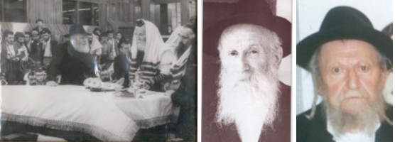

ארכיון המדינה חשף לאחרונה את תיק הרב שמואל נוטיק הי”ד, ממנו עולה סיפור מאבקו ההר
ארכיון המדינה חשף לאחרונה את תיק הרב שמואל נוטיק הי”ד, ממנו עולה סיפור מאבקו ההרואי להצלתו והצלחת משפחתו מציפורי הרשע של הקומוניסטים שביקשו לתפוס בטלפיהם את בניו היקרים, חסידים מסולאים מפז, ולחנכם על ברכי הכפירה • מרגש ומטלטל
ארכיון המדינה חשף לאחרונה את תיק הרב שמואל נוטיק הי”ד, ממנו עולה סיפור מאבקו ההרואי להצלתו והצלחת משפחתו מציפורי הרשע של הקומוניסטים שביקשו לתפוס בטלפיהם את בניו היקרים, חסידים מסולאים מפז, ולחנכם על ברכי הכפירה • מרגש ומטלטל צילום קובי הר צבי

שקט עמוק משתרר בסלון ביתו של המשפיע הרב זלמן נוטיק אשר בירושלים. הרב נוטיק מעיין בחבילת מכתבים שנכתבו לפני יותר משבעים שנה על ידי סבו הדגול החסיד הרב שמואל נוטיק. הנכד מתעמק בכל שורה ושורה, דרכן הוא מתחבר אל הסב הדגול שנאבק באותם ימים הרי–גורל נגד הרצון להפוך את בניו לחסרי–אמונה. זעקה זו של הסבא שעלתה מעמק הבכא, הדהדה עד ארץ ישראל. מדי פעם הרב נוטיק, הנכד, משפשף את מצחו, מנסה לפענח עוד מילה שתסגיר ולו שמץ מן הרגשות הסוערים שקיפל סבו החסיד בתוך השורות הצפופות.
ושוב מפר הנכד את הדממה, קורא בהתרגשות עוד כמה קטעים מתוך המכתב המרגש שכתב סבו לרבנות הראשית בארץ ישראל. מקולו ניכרת סערה רגשית גדולה:
“הנה שני בָּנַי שיחיו האחד בן אחד עשר שנים והשני בן תשע שנים ואני מגדלם ומחנכם בדרך התורה והיהדות, ומעת שבאו לכלל לימוד עד עתה, שכבר לומדים גמרא, אני בעצמי לומד עמהם, כי במדינתינו אין בתי סופר [בתי ספר ברוח היהדות] כידוע. והנה תלאות גדולות מוצאות אותי תמיד מחמת דבר זה, והנושה בא כמה פעמים לקחת את שני ילדי לו לעבדים [על פי פסוק במלכים, והכוונה שהקומוניסטים רוצים לקחת את הילדים - ש.ז.ב.], למוסרם למולך להעבירם באש זרה ח”ו [להכניסם ללמוד בבתי ספר קומוניסטים], והיה לנו כמה פעמים מסירות נפש על זה, אך השי”ת רִחם עלינו והצילנו מידם עד כה אחר כמה צער ועגמת נפש ופחדים גדולים שהיה לנו מזה”.
בימים ההם - עוצר הנכד ר’ זלמן נוטיק ומספר לכותב השורות - ביקש סבא לעלות לארץ הקודש לא לפני שקיבל את ברכתו של אדמו”ר הריי”צ, אך לשם כך היה צריך מימון עבור כרטיסי הפלגה, ועוד לפני כן - אישור יציאה משלטונות ברית המועצות, דבר שלא ניתן בקלות, אם בכלל.
לדמותו של חסיד
סבא, ר’ שמואל נוטיק הי”ד, היה מבחירי התמימים. בימי לימודיו ב’תומכי תמימים’ בליובאוויטש, היה גאון בלימוד ונחשב לאחד מ’בעלי הנגלה’ החשובים בישיבה. כאשר חבריו לספסל הלימודים ביקשו לדעת היכן מופיעה סוגיה באחת המסכתות בש”ס, היו פונים אליו, שכן היה מפורסם בבקיאותו בש”ס כולו. הייתה אף תקופה שלמרות היותו בחור–תלמיד, מילא את מקומו של אחד ממגידי שיעורים ומסר שיעור גמרא באחת הכיתות. לאחר נישואיו שימש כמשפיע בעיר אורשא, ולאחר מכן כרב בעיירה קופוסט.
בשל תפקידו זו, סבל מרדיפות קשות מצד השלטונות. אם לא די בכך, הרי הוא התעקש שלא לשלוח את ילדיו לבית הספר הסובייטי (ה”שקולע”), שם חינכו לכפירה. הוא ישב עם בניו בבית, שם למדו יחד. בכל תחילת שנת לימודים הגיעו לבית משפחת נוטיק נציגי בית הספר ומחלקת החינוך בעירייה, והיו דורשים בתקיפות לשלוח את הילדים לבית הספר, אך ר’ שמואל היה מתרץ תירוצים שונים, והילדים היו נשארים בבית. בשלב מסוים השלטונות ניסו לקחת ממנו את הילדים ולגדלם בדרך כפי שהם חשבו לנכון. לא בכדי משפחת נוטיק סבלה מצרות ומרדיפות מצד המשטר. ואכן, זכה ר’ שמואל, ובניו ובנותיו הלכו כל ימיהם בדרך התורה והחסידות.
גם תפקידו ברבנות של הרב נוטיק, היה לזרא בעיני השלטונות. הללו נהגו להטיל סנקציות קשות על ‘כלי הקודש’ כדי שהללו יואילו להשתמט מתפקידם. הם פקדו על הרב נוטיק לחטוב עצים ביער בעוד גויי העיירה לועגים לו. במקביל הוטלו עליו מיסים גדולים - והכל כדאי “לשכנעו” לעזוב את משרת הרבנות. מצבה של המשפחה היה קשה ביותר.
קריאה הצלה וענני תקווה
בשלב מסוים הבין ר’ שמואל כי אין לו מה לחפש יותר ברוסיה, ועליו לעשות הכול כדי לצאת מעמק הבכא ולעלות לארץ הקודש. הוא פתח במאמצים כדי לממש את תוכניתו זו. לשם כך היה עליו לעבור כמה משוכות: לקבל היתר יציאה מרוסיה, לקבל אישור עליה לארץ הקודש, ולהשיג כספים רבים עבור כרטיסי הנסיעה וכל מה שכרוך מסביב, דבר שכמובן לא היה בהישג ידו.
המאמצים לעלות לארץ ישראל החלו כבר בשנת תרצ”ב. הרב שמואל נוטיק שיגר מכתבים ישירות אל הרב קוק, רבה הראשי של ארץ ישראל - אשר מתוקף תפקידו סידר סרטיפיקטים בכמות מצומצמת לעולים לארץ הקודש. כמו כן הרב נוטיק פעל מול אישים נוספים שהתגוררו בארץ הקודש.
במכתב ששיגר אל הרבנות הראשית בארץ ישראל, סיפר בצבעים חיים וקודרים את הגיהינום שעובר הוא יחד עם בניו, ומבקש לעשות הכל כדי שיוכלו לצאת מרוסיה ולעלות לארץ הקודש. במכתב שזורים ביטויים רבים מהגמרא והתנ”ך; פה ושם שזורים ביטויים מוצפנים. מאידך, סגנון המכתב פתוח מאוד, חרף החשש מהשלטונות.
החסיד הדגול מביע במכתבו חשש שמא יילקחו ממנו בניו במטרה לחנכם במוסדות כפירה. הוא מתחנן ומפציר לעלות לארץ הקודש. כל שורה מרגשת, מעוררת תהיות, ומאידך - הסגנון הקולח השזור בפניני גמרא ותנ”ך, מגלים מעט מידיעותיו הרחבות של הסבא שהיה מהמיוחדים שבחבורה עוד בתקופה בה שקד ב’תומכי תמימים’ ליובאוויטש.
לפנינו ציטוטים נרחבים מהמכתב:
“לכבוד האדונים הנכבדים מנהלי משרד הרבנות שיחיו ברכה ושלום!
“הנה נא הואלתי לבקש את כבודם שישתדלו עבורי שיותן לי רשיון כניסה לארץ ישראל, אני ובני ביתי, הלא הם: אשתי מרים (מיראַ) ובני יעקב (יאָקאָב) ובני שלום ובתי רחל (ראָחלַיא) ובתי שרה (סאַרַא), ועלייתינו לארץ ישראל, הוא הכרח גדול לנו מאד עד שאי אפשר כלל לבאר במכתב אפילו חלק אחד מני אלף, כי לא ניתנו לכתוב דברים אלו. אך בקצרה אכתוב לכבודם ודי לחכימי ברמיזא, יעוין בגמרא - בבא בתרא דף ח’ עמוד ב: אמרו שזה [פידיון שבויים] נקרא מצוה רבה […]
“ויותר אין יכולת לכתוב, רק אכתוב איזה דברים שנתפרצו מתוך לבי מה שלא היה יכול הלב להכילם: חוסו ורחמו עלינו - אחינו בני ישראל - ופדו אותנו שלא יטמעו חס ושלום, בני בין האומות כי באו מים הזדונים עד נפש. ויותר אינני יכול לדבר מקוצר רוח. אך דעו נא אדונַי הנכבדים, כי הכרח גדול הוא לנו לעלות לארץ ישראל, על כן אבקש מכם בבקשה כפולה ומכופלת שתשתדלו עבורי בכל היכולת להשיג רשיון כניסה לא”י לי ולבני ביתי”.
מכתב זה נכתב, כאמור, בשנת תרצ”ב, אך ממנו עולה כי כבר קודם לכן החל לפעול בנידון:
“והנה זה שנים אחדים אשר אני עוסק בזה להשיג רשיון כניסה לארץ ישראל, וכתבתי שני פעמים להרב הראשי אברהם יצחק קוק לבקשו שישתדל עבורי. גם באתי במכתבים הרבה פעמים עם הד”ר פוליק מחיפה והד”ר [יוסף] אליש מחדרה, והמה דברו וכתבו עב[ור]י אל הרב קוק. ועתה קבלתי מכתב מהד”ר אליש וכותב לי שכל הענינים בדבר זה מרוכזים ומסורים למשרד הרבנות בירושלים והם מנהלים את הענין. על כן פניתי עתה במכתבי לכבוד מנהלי המשרד [משרד הרבנות הראשית] לבקש מהם שישתדלו עבורי”.
“תלאות גדולות מוצאות אותי תמיד”
הרב נוטיק מוסיף ומבהיר במכתבו, כי בהגיעו לארץ הקודש הינו מוכן לעבוד בכל עבודה שיתבקש, גם עבודת אדמה, העיקר שיותר לו לעלות. הוא מוסיף ומספר כי במצבו העכשווי, אין לו יכולת לקבל עבודה כל עוד לא ישלח את ילדיו לבתי ספר קומוניסטיים.
נכדו, הרב זלמן נוטיק יושב בירושלים, וממשיך לקרוא בהתרגשות את השורות הבוקעות מתוך זעקת–לב סוער:
“הנה שני בָנַי שיחיו, האחד בן אחד–עשר שנים והשני בן תשע שנים, ואני מגדלם ומחנכם בדרך התורה והיהדות, ומעת שבאו לכלל לימוד עד עתה, שכבר לומדים גמרא, אני בעצמי לומד עמהם, כי במדינתנו אין בתי סופר [בתי ספר ברוח היהדות] כידוע.
“והנה תלאות גדולות מוצאות אותי תמיד מחמת דבר זה, והנושה [השלטונות] בא כמה פעמים לקחת את שני ילדי לו לעבדים, למוסרם למולך להעבירם באש זרה ח”ו, והיה לנו כמה פעמים מסירות נפש על זה, אך השי”ת רִחם עלינו והצילנו מידם עד כה, אחר כמה צער ועגמת נפש ופחדים גדולים שהיה לנו מזה. כי דבר זה, זאת אומרת מה שאין אני רוצה למוסרם למולך להעבירם באש זרה של הסתה והדחה של כפירה, נחשב בעיניהם כמורד כו’, ומובן הדבר שאנחנו נמצאים בסכנה גדולה, השי”ת ירחם עלינו וישמרינו מכאן ולהבא עד שנזכה לעלות לארץ ישראל”.
השתיקה העמוקה חוזרת לשרור בסלון משפחת נוטיק. בחוץ רוח ירושלמית נושפת בשריקה מרעידה. בקול שקט ומתוק ממשיך הרב זלמן לקרוא את השורות שכתב סבו, בהם הוא מפציר בכל לשון, שיאפשרו לו לעלות לארץ הקודש:
“במה נחשב כל דבר נגד הצלת נפשות ילדי בני ישראל שלא יטמעו ח”ו בין העכו”ם על ידי כפיה והכרח של גזירת שמד. ויש לי רשות לאמר שאני הוא אחד בכל מדינותינו, כי לפי מה שאני יודע מצב של כמה וכמה אנשים אשר כמוני, זאת אומרת רבנים, לא מצאתי שום אחד שיהיה במצב נורא ומסוכן כזה אשר אני נמצא בו, על כן ישתדלו נא כבודם עבורי השתדלות פרטי יוצא מן הכלל בדרך הוראת שעה לפנים משורת חוקי הנהגת המשרד (אם הדבר דרוש כן) כי השעה צריכה לכך, ואני בטוח בכבוד האדונים שיחיו שישתדלו עבורנו בכל יכולתם על כן אקצר”.
הצרות והרדיפות מוסיפות לקבל דגש חשוב במכתב:
“מיום אל יום נעשה המצב גרוע וגרוע עד אשר כבר קשה כח הסבל לסבול. וכל אותן השנים אשר אנחנו שרוים בצער ובסכנת נפשות […]
“הנה, בָני שיחיו, בודדים בעירנו (ובכל מדינותינו) ואין להם שום חבר ורֵע והמה גלמודים ומנודים מכל נערי עירינו ונרדפים מהם, ברשיון כו’ [בעידוד והכוונת השלטונות], והמשכיל יבין, וסובלים חרפות וגידופים גדולים מכל נערי עירנו, כי כן לימדו אותם כהני המולך לחרף ולגדף ולרדוף עד חרמה את כל מי שנחשב ליהודי דתי או לאומי, ובפרט נערים המחונכים ומלומדים בתורה ויהדות ומגדלים פאות הראש והכרת פניהם יענה בהם כי המה זרע ברך ה’ וכל רואם יכירם כי כן המה מאותם שצריך לרדוף אותם כפי שלמדו אותם מורי המולך, והמשכיל יבין היטב דברים הללו, ועל כן מובן היטב שזה נסיון גדול לנערים קטנים להחזיק בתומתם בהיותם בתוך סביבה כזו.
“אך אתן שבח והודאה להשי”ת שעזרני עד כה להנהיגם בדרך התורה והיהדות, ולהשריש בלבם אהבת עם ישראל ותורתו ולשנוא את מעשה הרשעים וסכלותם, והנם ב”ה בתום ויושר לבבם הטהורה. ואני מחזק תמיד את לבבם ומרומם את רוחם בשעשועים שאני משתעשע עמהם ומספר להם על דבר העליה לא”י, לאמר שאני משתדל בדבר זה שנעלה לא”י ובקרוב אי”ה יוגמר הדבר ונעלה לא”י ושם יראו עולם חדש של יהדות וששון ושמחה של יהדות שוררת שם, בתי סופר הרבה מלאים נערים ונערות לומדים לימודי יהדות, בתי כנסיות ובתי מדרשות מלאים זקנים ונערים עוסקים בתפילה ותורה (אשר במדינתנו אין רואים זאת).
“אבקש מהם לכבדני בתשובה בקרוב. גם הד”ר אליש כתב עבורי למשרד הרבנות בטח נתקבל מכתבו.
הכתובת שלי, קופיס, אָרשַאנסק, אָקרוג, נוטיק
ברגשי כבוד שמואל נוטיק הרב דפה קאפוסט”.
מתוך המכתב שהתגלה לאחרונה בארכיון המדינה, עולה כי מאז כתיבתו, חודש ניסן תרצ”ב, המשיכו ד”ר אליש וד”ר פולק לפעול באינטנסיביות מול הרבנות הראשית, עד אשר ביום ב’ כסלו תרצ”ג התקבלה תעודת עליה, ‘סרטיפיקט’, עבור הרב נוטיק ובני ביתו.
כשנה וחצי לאחר מכן, בקיץ תרצ”ד, תוקף הויזה שקיבל פג.
לדלג על המשוכה השלישית
ייתכן שלאחר מכן, כן קיבל התרי יציאה, שכן במכתבים נוספים שנמצאו בארכיון המדינה, בקיץ תרצ”ד מבשר הרב נוטיק כי כעת נפתחו “מעייני הישועה”, משמע שקיבל פספורט משלטונות בריה”מ. ממכתבים אחרים (שאינם נמצאים בתיק הרבנות הראשית), הרב נוטיק מבקש עזרה דחופה מידידיו בארץ הקודש, לממן כרטיסי הפלגה לפחות לחלק מהמשפחה.
ביום ח”י אלול תרצ”ד, התקבלה במשרדי הרבנות תעודת העליה של הרב נוטיק ומשפחתו. לבקשת ד”ר פולק, התעודה נמסרה לגיסתו. פעולה זו היא התיעוד האחרון בתיק נוטיק שנמצא במרתפי משרדי הרבנות הראשית.
מסתבר שבשלב מסוים, צלח הרב נוטיק את שתי המשוכות הראשונות: השגת היתרי יציאה והיתרי עליה. כעת נותר לו לצלוח את האתגר השלישי: השגת המימון עבור נסיעת ששת בני המשפחה. מדובר היה בסכום עתק.
על בעיית מימון הכרטיסים כתב בקיץ תרצ”ד אל הרב שלמה יוסף זווין, שהתגורר באותם ימים בתל אביב, ופרסם את המכתב, בהשמטות קלות, בעיתון ‘היסוד’:
“אין ידי משגת להכסף הרב הצריך בעד הכרטיסים לכולנו, וטרחתי הרבה עד שעלתה בידי להשיג כרטיס אחד, גם… הבטיח לי כרטיס אחד, ואם היה לי עזר כרטיס שלישי הייתי יכול להציל את נפשי ונפש בניי, לכן באתי עתה להפיל תחינתי לפניו שישתדל עבורי להמציא לי כרטיס אחד”.
ככל הנראה, בשלב מסוים התייאש מלהשיג את הסכום האדיר על מנת לרכוש כרטיסי הפלגה. בשלב מסוים ביקש לעזוב את רוסיה עם שני בניו לבדם, במטרה להצילם מחינוך הקומוניסטי, ולנסות להוציא את רעייתו ובנותיו מברית המועצות בשלב הבא.
בהמשך כנראה השיג מימון עבור כרטיס אחד, ואדמו”ר הריי”צ הבטיחו שאם ישיג מימון לכרטיס אחד נוסף, הוא יממן עבורו את הכרטיס השלישי:
“יראה גם השנייה, ומקווה כשיהיה לו שני ש”ק [‘שיפס קארטע’, דהיינו כרטיסי אוניה] אוכל להשיג שלישית. יכתוב כמה צריך” (אגרות קודש חלק י”א ע’ תכד).
בפועל הרב נוטיק לא הצליח לצאת מרוסיה, ובשנה הבאה, תרצ”ה - נאסר על ידי השלטונות הקומוניסטיים והוגלה לחמש שנים למחנה עבודה בקרגנדה שבקזחסטן. הוא הצליח לשרוד את תנאי הגלות הקשים והשתחרר בשלום.
לאחר מלחמת העולם השניה ניסה שוב לצאת מרוסיה עם רעייתו ובתו יחד עם קבוצה קטנה של חסידים, אך למרבה הצער, תוך כדי הברחת הגבול, נעצרו כל חברי הקבוצה, ובהם הרב נוטיק, רעייתו ובתו והם נשלחו לגלות.
הרב נוטיק נשלח בשנית למחנה קרגנדה בקזחסטן, ובתחילת שנת תש”ט חלה בצהבת קשה. בחסדי הבורא הצליח להתגבר על המחלה הקשה, אולם כעבור זמן קצר חזרה המחלה המסוכנת, והפעם מצבו התדרדר במהירות.
ביום ה’ שבט תש”ט, השיב את נשמתו המיוסרת לבוראה.
השפעה רחבה
השיחה עם הנכד המשפיע, הרב זלמן נוטיק, מרתקת. כשאני מבקש לקום ולהיפרד לשלום, עוצר אותי ר’ זלמן, ואומר בהתרגשות האופיינית לו:
“סבא אכן לא זכה לעלות לארץ הקודש, אך בניו ובנותיו, אבי, דודיי ודודותיי, זכו לצאת מברית המועצות והקימו משפחות חב”דיות לתפארת. משפחתנו המפוזרת ברחבי העולם, מונה נכדים נינים וצאצאים רבים ההולכים בדרך התורה והחסידות. אין לי ספק שלסבא יש נחת רוח חסידית רבה מכך”.
מאחורי הקלעים של תיק נוטיק
ביום ראשון הקרוב, ה’ שבט, תחל שנת השבעים לפטירתו הטראגית של גיבור סיפורנו, הרה”ח הרב שמואל נוטיק הי”ד בשנת תש”ט.
בכתבה זו חושף “בית משיח” לראשונה את פרשיית ניסיון העליה לארץ הקודש של הרב שמואל נוטיק.
בעבר התפרסמו על ידי כותב השורות מכתבים ותיאורים על ניסיון העליה של הרב נוטיק לארץ הקודש, ניסיון שהסתיים במאסר. אולם לא מכבר פרסם ארכיון המדינה את תיק נוטיק שנמצא בגנזכי הרבנות הראשית לישראל. מהמסמכים החדשים עולה תמונה שונה ממה שהיה ידוע עד כה. בתיק המכתבים שנכתבו בכתב ידו של הרב נוטיק, מופיע תיאור המצב הנורא בו היה שרוי, הוא ומשפחתו.
לימים, נכדו, ר’ צבי הירש נאטיק וכן ר’ אליעזר מקובצקי, נחשפו למסמכים אלו ופענחו את המסמכים לפי המידע שהיה מצוי בידיהם, אך מעולם זה לא פורסם לקהל הרחב.
כדי להגיע לתמונה השלימה, כותב השורות פתח מחדש את כל המסמכים והמידע שנאגר אצלו במשך עשרים שנה, מאז התחיל לתעד את משפחת נוטיק. הוא צירף לכך את הפענוחים שנעשו מתוך התיק, ומתוך כך נבנתה תמונה כמעט מלאה על הטרגדיה הכואבת, שבמרכזה ניהל הרב שמואל נוטיק מאבק הירואי למען הצלתו והצלת משפחתו.
מאחורי הקלעים של תיק נוטיק
ביום ראשון הקרוב, ה’ שבט, תחל שנת השבעים לפטירתו הטראגית של גיבור סיפורנו, הרה”ח הרב שמואל נוטיק הי”ד בשנת תש”ט.
בכתבה זו חושף “בית משיח” לראשונה את פרשיית ניסיון העליה לארץ הקודש של הרב שמואל נוטיק.
בעבר התפרסמו על ידי כותב השורות מכתבים ותיאורים על ניסיון העליה של הרב נוטיק לארץ הקודש, ניסיון שהסתיים במאסר. אולם לא מכבר פרסם ארכיון המדינה את תיק נוטיק שנמצא בגנזכי הרבנות הראשית לישראל. מהמסמכים החדשים עולה תמונה שונה ממה שהיה ידוע עד כה. בתיק המכתבים שנכתבו בכתב ידו של הרב נוטיק, מופיע תיאור המצב הנורא בו היה שרוי, הוא ומשפחתו.
לימים, נכדו, ר’ צבי הירש נאטיק וכן ר’ אליעזר מקובצקי, נחשפו למסמכים אלו ופענחו את המסמכים לפי המידע שהיה מצוי בידיהם, אך מעולם זה לא פורסם לקהל הרחב.
כדי להגיע לתמונה השלימה, כותב השורות פתח מחדש את כל המסמכים והמידע שנאגר אצלו במשך עשרים שנה, מאז התחיל לתעד את משפחת נוטיק. הוא צירף לכך את הפענוחים שנעשו מתוך התיק, ומתוך כך נבנתה תמונה כמעט מלאה על הטרגדיה הכואבת, שבמרכזה ניהל הרב שמואל נוטיק מאבק הירואי למען הצלתו והצלת משפחתו.